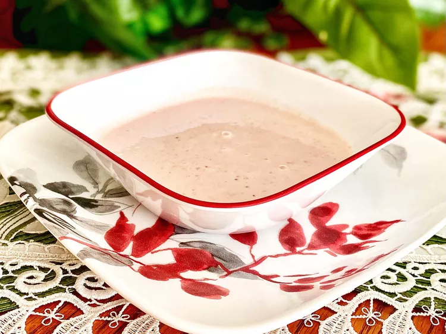

Home
Chilled Strawberry Soup

Description
This is the recipe you need if you've been trying to recreate the strawberry soup you had on Carnival Cruise Lines. Serve in chilled soup bowls, and garnish with fresh sliced strawberries.
Ingredients
- 2 cups frozen strawberries
- 2 cups milk
- 1 cup heavy cream
- 1/2 cup sour cream
- 2 tablespoons white sugar
Steps
- Puree strawberries, milk, cream, and sour cream in a blender or food processor until smooth.
- Stir in sugar to taste.
- Chill 8 hours or overnight in refrigerator before serving.